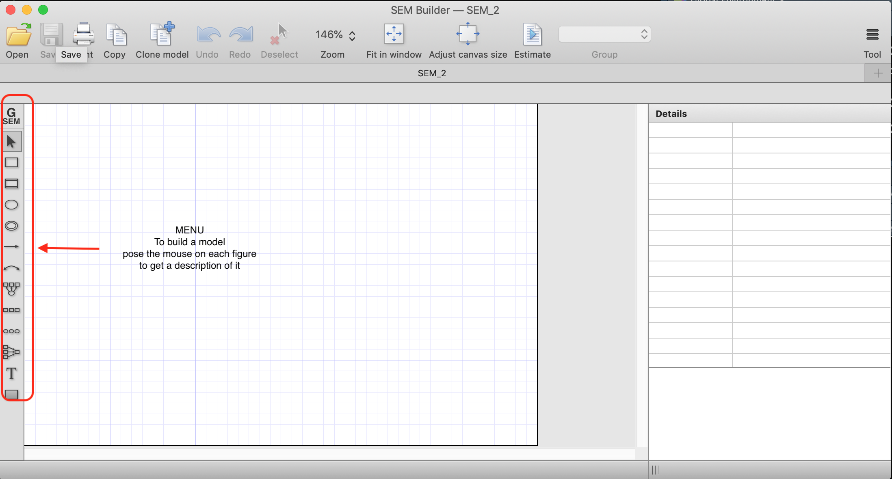
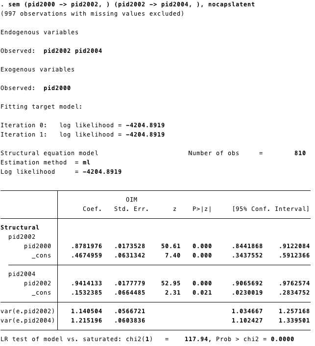
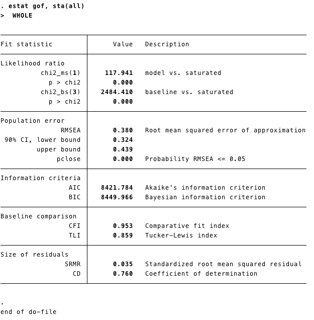
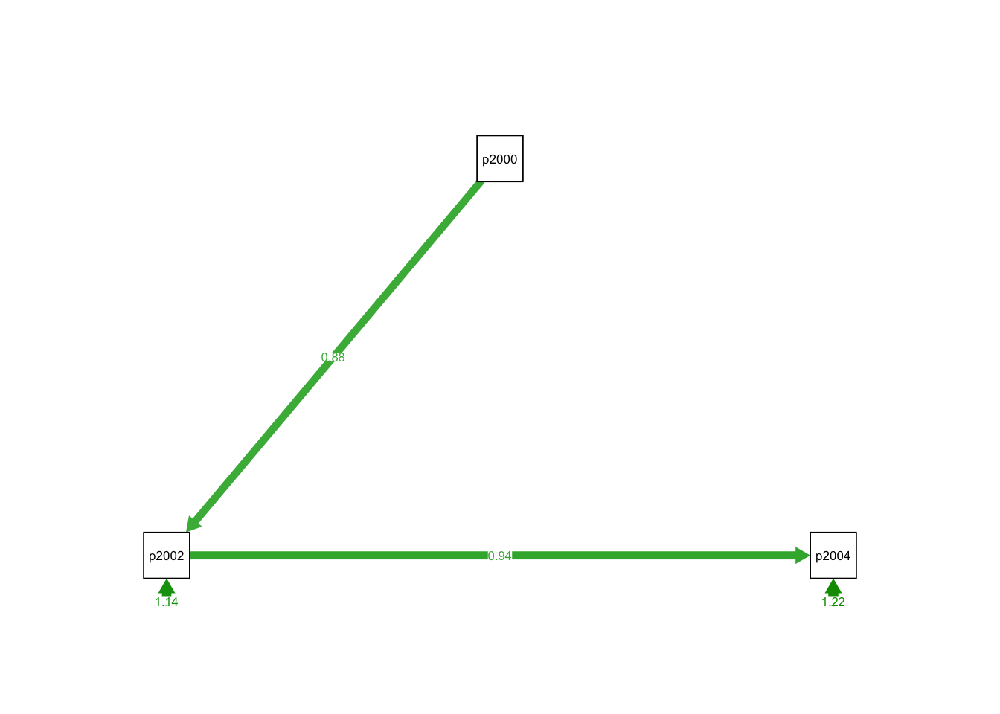
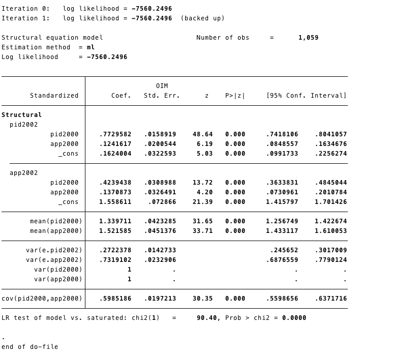
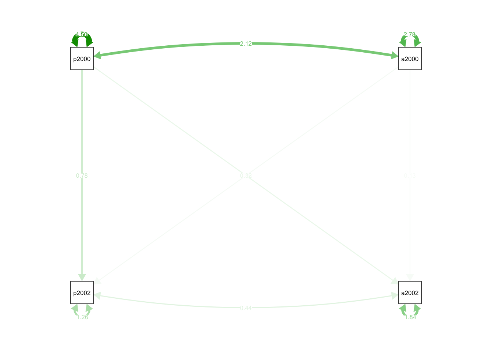
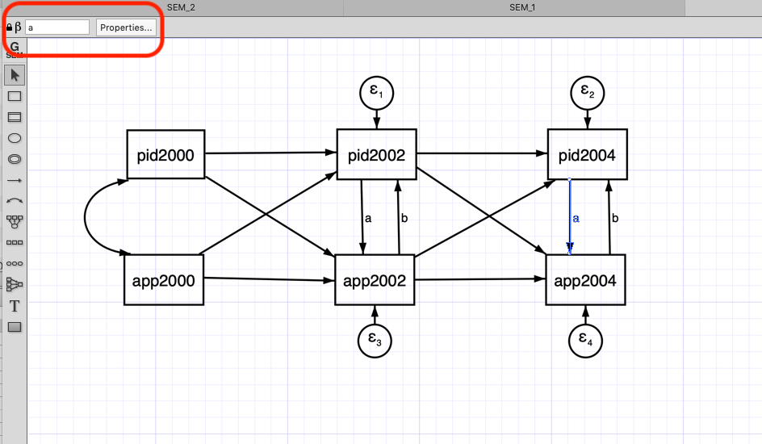
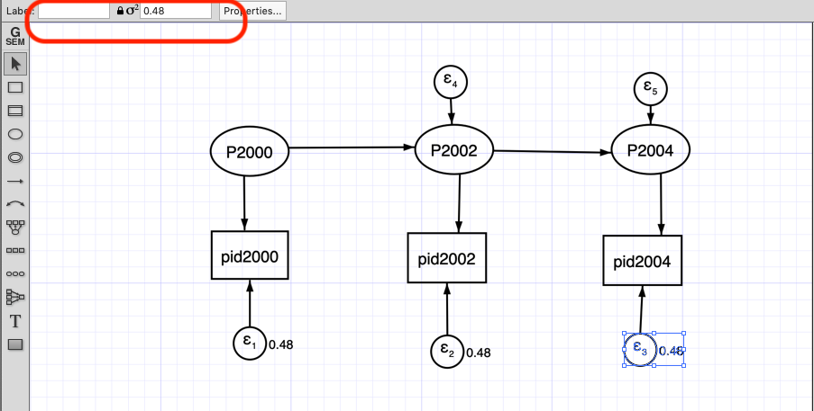
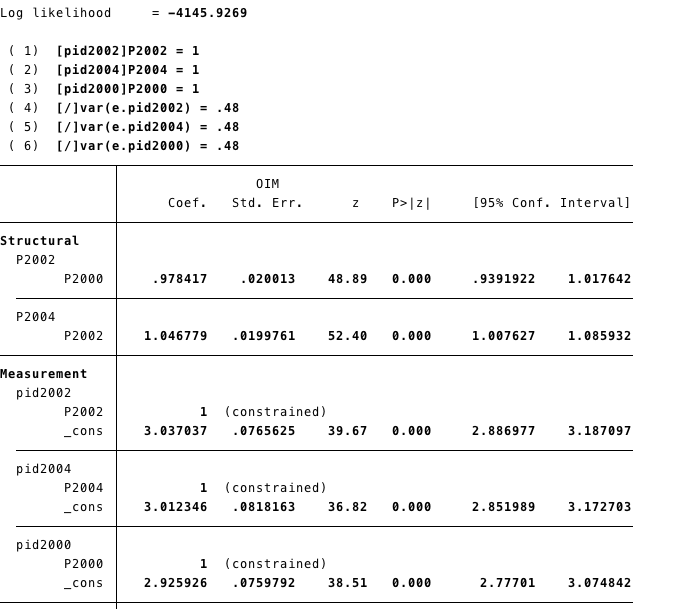
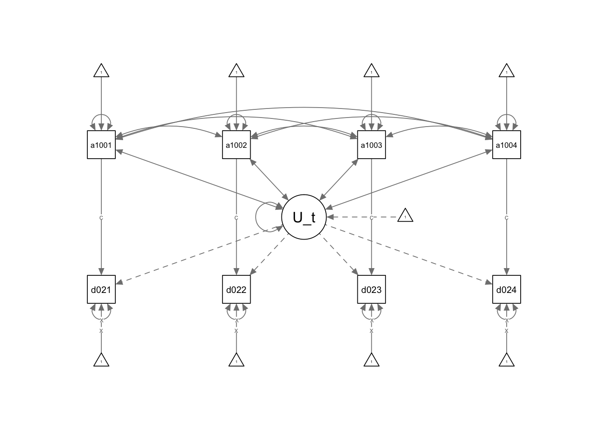

SEM
Also known as “Covariance Structure Analysis” (CSA). We used observed variance-covariances to estimate structural parameters and we use the estimated structural parameters to generate predicted variances and covariances.
In SEM we care about: regression coefficients, \(R^2\) and overall fit of the model.
In this section, we will use data adapted from:
American National Election Studies - 2000-2002-2004
Datasets:
- nes3wave.dta Download
Effects of US Foreign Assistance on Democracy Building: Results of a Cross-National Quantitative Study (Final report, prepared for USAID) Finkel, Steven E., Anibal Perez-Linan, Mitchell A. Seligson, and Dinorah Azpuru. 2006
Dataset:
- democracy1996-2002.dta Download
Download the files into your computer. We had saved the data-files in a folder called “datasets,” that is why our roots are, for instance: “./datasets/nes3wave.dta.dta”
1 Autoregressive model (Three waves)
- For this mode we will use the data “nes3wave”. You can check more details of the data here
1.1 STATA
- Getting the data:
SEM in STATA can be done with commands in the do file, but also has an “SEM builder”, which is more intuitive for SEM models.
You can open the “SEM builder” from the menu “Statistic” (figure below)

- A different window will open where you can build your model (figure below).

Below is how an autoregressive model would look with three waves (using the SEM builder). To estimate the model, we need to click “Estimate” (right on the horizontal menu)

After the estimation (using Maximum Likelihood) we estimate the estructural estimates and the error terms.

Another way to estimate SEM model is using STATA code:

- As we mentioned above fit measures are important for SEM models. We can obtain that in STATA running
estat gof, sta(all)after estimating the model.

1.2 R
- For this model we are going to use the data XXX from the XXXXX
- We get the data using the function
importfrom the package rio
- To run SEM we are going to use the package lavaan
- The first step is to call the package using
library(lavaan) - Then we write our model as string.
pid2002 ~ pid2000set the structural effect of pid2000 on pid2002.It corresponds to the STATA code(pid2000 -> pid2002, )- Our model has two structural effects:
- pid2002 ~ pid2000
- pid2004 ~ pid2002
- Then we estimate the model using the function sem from the package
lavaan - Finally, we used the function
summaryto retrieve the information from our model.
## This is lavaan 0.6-3## lavaan is BETA software! Please report any bugs.path1<-
'pid2002 ~ pid2000
pid2004 ~ pid2002
'
## pid2000 is the exogenous variable.
## The models have to be in different linessem1 <-sem(path1, data=new)
## The objecto sem1 has all the information from the estimation process.
summary(sem1)## lavaan 0.6-3 ended normally after 14 iterations
##
## Optimization method NLMINB
## Number of free parameters 4
##
## Used Total
## Number of observations 810 1807
##
## Estimator ML
## Model Fit Test Statistic 117.941
## Degrees of freedom 1
## P-value (Chi-square) 0.000
##
## Parameter Estimates:
##
## Information Expected
## Information saturated (h1) model Structured
## Standard Errors Standard
##
## Regressions:
## Estimate Std.Err z-value P(>|z|)
## pid2002 ~
## pid2000 0.878 0.017 50.608 0.000
## pid2004 ~
## pid2002 0.941 0.018 52.954 0.000
##
## Variances:
## Estimate Std.Err z-value P(>|z|)
## .pid2002 1.141 0.057 20.125 0.000
## .pid2004 1.215 0.060 20.125 0.000- We can also get the model’s fit information adding an argument
fit.measures=TRUEintosummary. We have the same information as the STATA commandestat gof, sta(all)
## lavaan 0.6-3 ended normally after 14 iterations
##
## Optimization method NLMINB
## Number of free parameters 4
##
## Used Total
## Number of observations 810 1807
##
## Estimator ML
## Model Fit Test Statistic 117.941
## Degrees of freedom 1
## P-value (Chi-square) 0.000
##
## Model test baseline model:
##
## Minimum Function Test Statistic 2484.410
## Degrees of freedom 3
## P-value 0.000
##
## User model versus baseline model:
##
## Comparative Fit Index (CFI) 0.953
## Tucker-Lewis Index (TLI) 0.859
##
## Loglikelihood and Information Criteria:
##
## Loglikelihood user model (H0) -2430.863
## Loglikelihood unrestricted model (H1) -2371.892
##
## Number of free parameters 4
## Akaike (AIC) 4869.726
## Bayesian (BIC) 4888.514
## Sample-size adjusted Bayesian (BIC) 4875.811
##
## Root Mean Square Error of Approximation:
##
## RMSEA 0.380
## 90 Percent Confidence Interval 0.324 0.439
## P-value RMSEA <= 0.05 0.000
##
## Standardized Root Mean Square Residual:
##
## SRMR 0.035
##
## Parameter Estimates:
##
## Information Expected
## Information saturated (h1) model Structured
## Standard Errors Standard
##
## Regressions:
## Estimate Std.Err z-value P(>|z|)
## pid2002 ~
## pid2000 0.878 0.017 50.608 0.000
## pid2004 ~
## pid2002 0.941 0.018 52.954 0.000
##
## Variances:
## Estimate Std.Err z-value P(>|z|)
## .pid2002 1.141 0.057 20.125 0.000
## .pid2004 1.215 0.060 20.125 0.0001.2.0.1 SEM ploting with R
- To plot the model we will need the package semPlot
- We call the package with library()
- And we use `
semPathsto get the basic plot of our SEM model.
## Registered S3 methods overwritten by 'ggplot2':
## method from
## [.quosures rlang
## c.quosures rlang
## print.quosures rlang## Registered S3 methods overwritten by 'huge':
## method from
## plot.sim BDgraph
## print.sim BDgraph
semPlothas a lot of arguments, and we can customize the plot using these arguments. For instance, we can add the coefficients and give weight (based on the coefficients) to the arrows.We will explore these arguments progressively. Lets start changing the style to “lisrel”. This option changes the plot and shows a single headed edges with no node as origin.“Estimates” add the estimates to the arrows.

2 Cross-lagged models
2.1 STATA

Code:
sem (pid2000 -> pid2002, ) (pid2000 -> app2002, ) //
(app2000 -> pid2002, ) (app2000 -> app2002, ), //
cov( pid2000*app2000) standardized 
2.2 R
- First, lets write our model.
- Similar to the autorregressive model (above), the cross-lagged model has structural effects. For instance
pid2002 ~ pid2000 + app2000 - We are adding covariances, for this model
app2000~~pid2000. This corresponds to the STATA codecov( pid2000*app2000)
- Then we estimate it
- Now, we ask for the results. Adding the option
standardized=TRUEadd the standaridized coefficients (last column)
## lavaan 0.6-3 ended normally after 24 iterations
##
## Optimization method NLMINB
## Number of free parameters 10
##
## Used Total
## Number of observations 1059 1807
##
## Estimator ML
## Model Fit Test Statistic 0.000
## Degrees of freedom 0
##
## Parameter Estimates:
##
## Information Expected
## Information saturated (h1) model Structured
## Standard Errors Standard
##
## Regressions:
## Estimate Std.Err z-value P(>|z|) Std.lv Std.all
## pid2002 ~
## pid2000 0.785 0.020 38.621 0.000 0.785 0.773
## app2000 0.160 0.026 6.204 0.000 0.160 0.124
## app2002 ~
## app2000 0.130 0.031 4.177 0.000 0.130 0.137
## pid2000 0.317 0.025 12.919 0.000 0.317 0.424
##
## Covariances:
## Estimate Std.Err z-value P(>|z|) Std.lv Std.all
## pid2000 ~~
## app2000 2.119 0.127 16.712 0.000 2.119 0.599
## .pid2002 ~~
## .app2002 0.436 0.049 8.950 0.000 0.436 0.286
##
## Variances:
## Estimate Std.Err z-value P(>|z|) Std.lv Std.all
## .pid2002 1.263 0.055 23.011 0.000 1.263 0.272
## .app2002 1.836 0.080 23.011 0.000 1.836 0.732
## pid2000 4.501 0.196 23.011 0.000 4.501 1.000
## app2000 2.785 0.121 23.011 0.000 2.785 1.000## Warning in qgraph::qgraph(Edgelist, labels = nLab, bidirectional = Bidir, :
## The following arguments are not documented and likely not arguments of
## qgraph and thus ignored: standardized
3 Synchronous and cross-lagged model
This model has two new features. First it has a reciprocal effect, meaning that the variables can affect each other in a given time.
We added equality constraints to the coefficients accross waves. For instance, the effect from pid2004 to app2004 we had constrained (
a) to be the same as the pid2002 to app2002. The same way, we used (b) to constrained the effect from app2004 to pid2004 to be the same as app2002 to app2002
3.1 STATA
- We can add those constraints in the SEM builder by first selecting the arrow and then adding the constraint (Red box at the top left corner)

Code
- We can add the constraints to the effect using the @. For instance,
(pid2002@a -> app2002, )and(pid2004@a -> app2004, )are equally constrained (we have added the @a to both)
sem (pid2000 -> pid2002, ) (pid2002 -> pid2004, ) (pid2002@a -> app2002, ) /// (pid2004@a -> app2004, ) (app2000 -> app2002, ) (app2002@b -> pid2002, ) ///
(app2002 -> app2004, ) (app2004@b -> pid2004, ), ///
standardized cov( pid2000*app2000) nocapslatent
estat gof, sta(all)- We wont show the whole output here, but in this section you can see that the effects of [pidd2002]app2002 and [pidd2002]app2002 are equal.

3.2 R
- We use a similar idea to add constrains to our model. In this case, we multiply for the same constants where we want to equally constrain.
cls1<-
'
pid2002 ~ pid2000 + app2000 + b*app2002
app2002 ~ app2000 + pid2000 + a*pid2002
pid2004 ~ pid2002 + app2002 + b*app2004
app2004 ~ app2002 + pid2002 + a*pid2004
## Covariances
app2000~~pid2000
#app2002~~0*pid2002
'- Now we run the model and ask for the results with summary
## lavaan 0.6-3 ended normally after 30 iterations
##
## Optimization method NLMINB
## Number of free parameters 19
## Number of equality constraints 2
##
## Used Total
## Number of observations 738 1807
##
## Estimator ML
## Model Fit Test Statistic 133.511
## Degrees of freedom 4
## P-value (Chi-square) 0.000
##
## Parameter Estimates:
##
## Information Expected
## Information saturated (h1) model Structured
## Standard Errors Standard
##
## Regressions:
## Estimate Std.Err z-value P(>|z|) Std.lv Std.all
## pid2002 ~
## pid2000 0.778 0.044 17.608 0.000 0.778 0.768
## app2000 0.156 0.034 4.619 0.000 0.156 0.119
## app2002 (b) 0.083 0.124 0.671 0.502 0.083 0.060
## app2002 ~
## app2000 0.098 0.044 2.210 0.027 0.098 0.104
## pid2000 0.079 0.131 0.604 0.546 0.079 0.109
## pid2002 (a) 0.285 0.159 1.791 0.073 0.285 0.398
## pid2004 ~
## pid2002 0.856 0.044 19.380 0.000 0.856 0.801
## app2002 0.099 0.077 1.289 0.197 0.099 0.066
## app2004 (b) 0.083 0.124 0.671 0.502 0.083 0.065
## app2004 ~
## app2002 0.523 0.039 13.295 0.000 0.523 0.453
## pid2002 0.057 0.142 0.399 0.690 0.057 0.069
## pid2004 (a) 0.285 0.159 1.791 0.073 0.285 0.368
##
## Covariances:
## Estimate Std.Err z-value P(>|z|) Std.lv Std.all
## pid2000 ~~
## app2000 2.245 0.158 14.256 0.000 2.245 0.616
##
## Variances:
## Estimate Std.Err z-value P(>|z|) Std.lv Std.all
## .pid2002 1.042 0.093 11.191 0.000 1.042 0.216
## .app2002 1.600 0.094 17.023 0.000 1.600 0.646
## .pid2004 1.109 0.099 11.191 0.000 1.109 0.201
## .app2004 1.185 0.070 17.023 0.000 1.185 0.358
## pid2000 4.706 0.245 19.209 0.000 4.706 1.000
## app2000 2.819 0.147 19.209 0.000 2.819 1.000- This time we are changing the layout to
tree2
## Warning in qgraph::qgraph(Edgelist, labels = nLab, bidirectional = Bidir, :
## The following arguments are not documented and likely not arguments of
## qgraph and thus ignored: standardized
4 Measurement error model
Measurement erros is especially problematic for panel analysis. In SEM framework we can deal with this in a simple way. For instance, lets take our Autoregressive model and lets model its measurement error. We will model the Wiley-Wiley solution ( assuming equal measurement error) in order to have an identified model.
In our model we use the error’s variance as constrained:
\[ Var(w)=Var(y_{2}^*)- \frac{Cov(y_{2}^*,y_{3}^*)Cov(y_{1}^*,y_{2}^*)}{Cov(y_{1}^*,y^*_3)} \]
- More details about this in Finkel (1995)
- We can obtain our variance-covariance matrix in R.
- First, we
selectthe variables we need to obtain our matrix using the function var. - Lets do it using the the function
selectfrom dplyr and%>%to do everything in one line.
##
## Attaching package: 'dplyr'## The following objects are masked from 'package:stats':
##
## filter, lag## The following objects are masked from 'package:base':
##
## intersect, setdiff, setequal, union## pid2000 pid2002 pid2004
## pid2000 4.681774 4.111523 4.301286
## pid2002 4.111523 4.752644 4.474202
## pid2004 4.301286 4.474202 5.428772Then following the formula we have that
## [1] 0.4775116- Round to two digits using the function
round
## [1] 0.484.1 STATA
Using the SEM builder we create the latent variables for each variable and constraint its error variance to 0.48.
The red box shows where you can impose constraint to the variance error variance.

output

4.2 R
- We have to add latent variables to our model. To model latent variables we use
=~. - To fix the error variance we multiply it by 0.48
e1<-
'
## Latents
P2000=~pid2000
P2002=~pid2002
P2004=~pid2004
## Regresion
P2002~P2000
P2004~P2002
## Fixing Error
pid2000~~0.48*pid2000
pid2002~~0.48*pid2002
pid2004~~0.48*pid2004
'## lavaan 0.6-3 ended normally after 18 iterations
##
## Optimization method NLMINB
## Number of free parameters 5
##
## Used Total
## Number of observations 810 1807
##
## Estimator ML
## Model Fit Test Statistic 0.011
## Degrees of freedom 1
## P-value (Chi-square) 0.917
##
## Parameter Estimates:
##
## Information Expected
## Information saturated (h1) model Structured
## Standard Errors Standard
##
## Latent Variables:
## Estimate Std.Err z-value P(>|z|)
## P2000 =~
## pid2000 1.000
## P2002 =~
## pid2002 1.000
## P2004 =~
## pid2004 1.000
##
## Regressions:
## Estimate Std.Err z-value P(>|z|)
## P2002 ~
## P2000 0.978 0.020 48.893 0.000
## P2004 ~
## P2002 1.047 0.020 52.397 0.000
##
## Variances:
## Estimate Std.Err z-value P(>|z|)
## .pid2000 0.480
## .pid2002 0.480
## .pid2004 0.480
## P2000 4.196 0.232 18.059 0.000
## .P2002 0.251 0.050 5.020 0.000
## .P2004 0.265 0.054 4.920 0.000
5 SEM Fixed Effects
We can incorporate unobserved heterogeneity within the SEM model. In order to do this we use an unobserved latent variable.
For this section we will use the democracy1996-2002.dta dataset; it is in a wide format. You can review about data’s formats (wide and long) here Data organization
5.1 STATA
In this model the latent U correlates with the independent variables and havea constant effect on the dependent variable.

We can also estimate the same model using STATA do file.

Summarizing: - This model has a latent U term that represents the unobserved heterogeneity that does not change with time. - This U is correlated with the independent and dependent variable. This correlation is constant in time. - We set a constant effect from the independent variable for each time. - We also set the variance of the dependent variable constant in each time.
5.2 R
Lets import the data with the function import from the package rio
We use the package Lavaan.
First, we set the latent U term:
U_term=~1*dg02i1+1*dg02i2+1*dg02i3+1*dg02i4Multiplying the variables to 1 we are constraining the loads.Then we set the models for instance
dg02i1~c*aid1001. Here dg02i1 is the dependent variable and aid1001 is the dependent variable. We are multiplying every regression with c, then the effects are constrained.We would like to constraint the intercepts too. We do it by multiplying the 1 with a constant.
dg02i1~x*1Finally, we also constrain the variance with a constant
dg02i1~~x*dg02i1
semf<-
'
## Latents
U_term=~1*dg02i1+1*dg02i2+1*dg02i3+1*dg02i4
## Regresion
dg02i1~c*aid1001
dg02i2~c*aid1002
dg02i3~c*aid1003
dg02i4~c*aid1004
## Intercepts
dg02i1~x*1
dg02i2~x*1
dg02i3~x*1
dg02i4~x*1
## Covariance
U_term~~aid1001
U_term~~aid1002
U_term~~aid1003
U_term~~aid1004
aid1001~~aid1002
aid1001~~aid1003
aid1001~~aid1004
aid1002~~aid1003
aid1002~~aid1004
aid1003~~aid1004
## Constraining the variance
dg02i1~~x*dg02i1
dg02i2~~x*dg02i2
dg02i3~~x*dg02i3
dg02i4~~x*dg02i4
'## lavaan 0.6-3 ended normally after 148 iterations
##
## Optimization method NLMINB
## Number of free parameters 31
## Number of equality constraints 10
##
## Number of observations 140
##
## Estimator ML
## Model Fit Test Statistic 307.197
## Degrees of freedom 23
## P-value (Chi-square) 0.000
##
## Parameter Estimates:
##
## Information Expected
## Information saturated (h1) model Structured
## Standard Errors Standard
##
## Latent Variables:
## Estimate Std.Err z-value P(>|z|)
## U_term =~
## dg02i1 1.000
## dg02i2 1.000
## dg02i3 1.000
## dg02i4 1.000
##
## Regressions:
## Estimate Std.Err z-value P(>|z|)
## dg02i1 ~
## aid1001 (c) 0.087 0.011 7.929 0.000
## dg02i2 ~
## aid1002 (c) 0.087 0.011 7.929 0.000
## dg02i3 ~
## aid1003 (c) 0.087 0.011 7.929 0.000
## dg02i4 ~
## aid1004 (c) 0.087 0.011 7.929 0.000
##
## Covariances:
## Estimate Std.Err z-value P(>|z|)
## U_term ~~
## aid1001 -7.801 3.479 -2.242 0.025
## aid1002 -10.911 3.550 -3.073 0.002
## aid1003 -7.757 2.805 -2.766 0.006
## aid1004 -15.373 4.676 -3.288 0.001
## aid1001 ~~
## aid1002 27.702 3.543 7.820 0.000
## aid1003 15.782 2.500 6.314 0.000
## aid1004 13.464 3.666 3.673 0.000
## aid1002 ~~
## aid1003 16.731 2.549 6.563 0.000
## aid1004 16.730 3.772 4.436 0.000
## aid1003 ~~
## aid1004 23.876 3.436 6.950 0.000
##
## Intercepts:
## Estimate Std.Err z-value P(>|z|)
## .dg02i1 (x) 0.810 0.056 14.552 0.000
## .dg02i2 (x) 0.810 0.056 14.552 0.000
## .dg02i3 (x) 0.810 0.056 14.552 0.000
## .dg02i4 (x) 0.810 0.056 14.552 0.000
## aid1001 2.728 0.464 5.874 0.000
## aid1002 3.306 0.457 7.228 0.000
## aid1003 3.005 0.367 8.198 0.000
## aid1004 4.500 0.596 7.550 0.000
## U_term 0.000
##
## Variances:
## Estimate Std.Err z-value P(>|z|)
## .dg02i1 (x) 0.810 0.056 14.552 0.000
## .dg02i2 (x) 0.810 0.056 14.552 0.000
## .dg02i3 (x) 0.810 0.056 14.552 0.000
## .dg02i4 (x) 0.810 0.056 14.552 0.000
## aid1001 31.351 3.747 8.367 0.000
## aid1002 31.562 3.772 8.367 0.000
## aid1003 19.957 2.385 8.367 0.000
## aid1004 54.236 6.482 8.367 0.000
## U_term 51.651 6.202 8.328 0.000
6 SEM Random Effects
A Random Effect asumes that the U term does not correlates with the independent variables. Therefore, from our previous model we can get rid of those covariances and have a RE model.
6.1 STATA

sem (dg02i1 <- _cons@x, ) (dg02i2 <- _cons@x, ) (dg02i3 <- _cons@x, ) (dg02i4 <- _cons@x, ) (aid1001@c -> dg02i1, ) (aid1002@c -> dg02i2, ) (aid1003@c -> dg02i3, ) ///
(U@1 -> dg02i1,) (U@1 -> dg02i2, ) (U@1 -> dg02i3, ) (U@1 -> dg02i4, ) (aid1004@c -> dg02i4, ), covstruct(_lexogenous, diagonal) cov(_lexogenous*_oexogenous@0) ///
latent(U ) cov(e.dg02i1@e e.dg02i2@e e.dg02i3@e e.dg02i4@e) nocapslatent
6.2 R
- We have removed the covariance from the U term to the independent variables.
semRE<-
'
## Latents
U_term=~1*dg02i1+1*dg02i2+1*dg02i3+1*dg02i4
## Regresion
dg02i1~x*1+c*aid1001
dg02i2~x*1+c*aid1002
dg02i3~x*1+c*aid1003
dg02i4~x*1+c*aid1004
## Covariance
aid1001~~aid1002
aid1001~~aid1003
aid1001~~aid1004
aid1002~~aid1003
aid1002~~aid1004
aid1003~~aid1004
## Fixing variance
dg02i1~~x*dg02i1
dg02i2~~x*dg02i2
dg02i3~~x*dg02i3
dg02i4~~x*dg02i4
'## lavaan 0.6-3 ended normally after 108 iterations
##
## Optimization method NLMINB
## Number of free parameters 27
## Number of equality constraints 10
##
## Number of observations 140
##
## Estimator ML
## Model Fit Test Statistic 312.078
## Degrees of freedom 27
## P-value (Chi-square) 0.000
##
## Parameter Estimates:
##
## Information Expected
## Information saturated (h1) model Structured
## Standard Errors Standard
##
## Latent Variables:
## Estimate Std.Err z-value P(>|z|)
## U_term =~
## dg02i1 1.000
## dg02i2 1.000
## dg02i3 1.000
## dg02i4 1.000
##
## Regressions:
## Estimate Std.Err z-value P(>|z|)
## dg02i1 ~
## aid1001 (c) 0.084 0.011 7.470 0.000
## dg02i2 ~
## aid1002 (c) 0.084 0.011 7.470 0.000
## dg02i3 ~
## aid1003 (c) 0.084 0.011 7.470 0.000
## dg02i4 ~
## aid1004 (c) 0.084 0.011 7.470 0.000
##
## Covariances:
## Estimate Std.Err z-value P(>|z|)
## aid1001 ~~
## aid1002 26.494 3.394 7.806 0.000
## aid1003 14.923 2.398 6.223 0.000
## aid1004 11.762 3.474 3.386 0.001
## aid1002 ~~
## aid1003 15.529 2.408 6.449 0.000
## aid1004 14.349 3.511 4.087 0.000
## aid1003 ~~
## aid1004 22.183 3.234 6.860 0.000
##
## Intercepts:
## Estimate Std.Err z-value P(>|z|)
## .dg02i1 (x) 0.809 0.056 14.552 0.000
## .dg02i2 (x) 0.809 0.056 14.552 0.000
## .dg02i3 (x) 0.809 0.056 14.552 0.000
## .dg02i4 (x) 0.809 0.056 14.552 0.000
## aid1001 1.798 0.467 3.854 0.000
## aid1002 2.006 0.462 4.343 0.000
## aid1003 2.081 0.369 5.633 0.000
## aid1004 2.669 0.603 4.426 0.000
## U_term 0.000
##
## Variances:
## Estimate Std.Err z-value P(>|z|)
## .dg02i1 (x) 0.809 0.056 14.552 0.000
## .dg02i2 (x) 0.809 0.056 14.552 0.000
## .dg02i3 (x) 0.809 0.056 14.552 0.000
## .dg02i4 (x) 0.809 0.056 14.552 0.000
## aid1001 30.487 3.644 8.367 0.000
## aid1002 29.872 3.570 8.367 0.000
## aid1003 19.103 2.283 8.367 0.000
## aid1004 50.881 6.081 8.367 0.000
## U_term 51.734 6.208 8.334 0.000